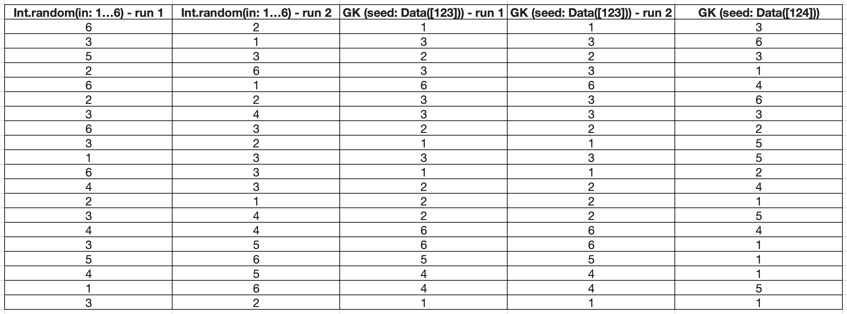

Pseudo random number generation using a hash function
11-01-2021 Filed in: Swift
What if you want to generate random numbers, in a deterministic way and be able to restore the RNGs state? Maybe rolling your own using a hash function and conforming to `RandomNumberGenerator` is the way to go? Its the way I did it for my roguelike game.
Introduction
My Roguelike SpriteKit game features procedurally generated loot. One source of loot is killing enemies.
One thing I noticed when I was using the GameplayKit random number generators (RNGs), is that it can be beneficial to save just before an encounter and reload if you want to try and get better loot. (this is generally called 'save scumming')
The problem
The RNGs in GameplayKit are deterministic, in that for every initial value ('seed'), they return the exact same sequence of numbers. This is different from using something like
Int.random(in: 1...6) that doesn't use a fixed seed and gives a different result every time it's run.
As you can see, the Int.random sequence changes with every result. The GameplayKit sequence is only dependent on the seed.
In the game, the save scumming worked, because after loading the RNG in the loot provider was reset to it's initial seed. This means that if you get a bad roll on a loot drop, you can reload and get a roll based on the first random number for the seed that was chosen for the loot dropper (which is for now hard coded). So you more or less could only save scumm once: every reload would give the same result. In the design of this game, this is still unintended behaviour. What if your the very first roll is awesome and you could use the same roll over and over again? Also, apart from world generation, the game is completely deterministic, meaning that only your choices have an impact on outcome. Loading for re-rolls does not fit that design.
Requirement
What I needed was a way to save the progress in the random sequence when saving the game. So after loading, the RNG would be in the same state as before save. This would make sure it always gives the same result for the same actions. Unfortunately GameplayKit does not offer this because the
seed property of the GKRandomSource always holds the initial seed, not the current 'position' in the sequence. There is no way of retrieving these.GKRandomSource does provide a function (
dropValues(_ count:)) to drop a certain number of results. This would make it possible to move to a certain location in the sequence, by dropping all the numbers you don't need. One possible solution would be to keep count of the number of random numbers generated, saving that and then when loading dropping all the numbers before the position you need.I chose not to use this solution for three reasons:
- It's wasteful to generate possibly a large number of random numbers, only to 'drop' them;
- There is no built in way to determine how many numbers were generated. So, you need to programatically keep track in some counter. If you miss one random number generation, you lose determinism;
- There is a simple solution: using a (pure) function.
The solution
I chose the solution presented in: Math for Game Programmers: Noise-Based RNG This video also has a great explanation about random number generators in general. The issues you might face when using them (mine is just an example) and goes into a lot more detail on how to make more sophisticated once. Highly recommended.
The Swift standard library contains the
RandomNumberGenerator protocol. When you use something like Int.random(in:) or Array.shuffle(), you implicitly use the System Random Number Generator that conform to this protocol. These functions however, allow you to choose any RNG, as long as it conforms to RandomNumberGenerator. Lets say you have an instance of your own RNG that conforms to this protocol, you can then use it by passing it by reference into the
Int.random, Array.shuffle, etc. functions. Instead of writing Int.random(in: 1...6) you would write Int.random(in: 1...6, using: &rng).Conforming to this protocol has one requirement, implementing a function:
mutating func next() -> UInt64.I chose to use the hash function of the video (timestamp: 44:48) to implement my own RNG. It's a very simple Struct:
struct PRNG: RandomNumberGenerator {
var seed: UInt64
// This RNG function uses Squirrel Eiserloh's hash function to generate "random" numbers.
mutating func next() -> UInt64 {
seed = Squirrel3(seed)
return seed
}
}
All it does is call the Squirrel3 function and saves the result in the seed. Because this number is exposed to the outside world, I can very easily load and save it and go to the *exact* position in the sequence when saving.
For the Squirrel3 function, I tried two options. A Swift based one and a C based one. In the game I stuck with the C based one because it was 4x faster. However, using C in a Swift project does mean more work with bridging header files, regular header files, assigning files to projects. Always a bit tricky. If you don't mind the performance penalty, using a pure Swift implementation might be preferable.
The C function I ended up with is this:
uint64_t Squirrel3( uint64_t position ) {
const uint64_t BIT_NOISE1 = 0xB5297A4DB5297A4D;
const uint64_t BIT_NOISE2 = 0x68E31DA468E31DA4;
const uint64_t BIT_NOISE3 = 0x1B56C4E91B56C4E9;
uint64_t mangled = position;
mangled *= BIT_NOISE1;
mangled ^= (mangled >> 8);
mangled += BIT_NOISE2;
mangled ^= (mangled << 8);
mangled *= BIT_NOISE3;
mangled ^= (mangled >> 8);
return mangled;
}
(the function is converted to use 64-bit unsigned Ints, because that is what the
RandomNumberGenerator required. The BIT_NOISEs are all large 64 bit prime numbers.)Equivalent Swift version:
func Squirrel3( position: UInt64 ) -> UInt64 {
let BIT_NOISE1: UInt64 = 0xB5297A4DB5297A4D;
let BIT_NOISE2: UInt64 = 0x68E31DA468E31DA4;
let BIT_NOISE3: UInt64 = 0x1B56C4E91B56C4E9;
var mangled: UInt64 = position;
mangled = mangled.multipliedReportingOverflow(by: BIT_NOISE1).partialValue;
mangled ^= (mangled >> 8);
mangled = mangled.addingReportingOverflow(BIT_NOISE2).partialValue;
mangled ^= (mangled << 8);
mangled = mangled.multipliedReportingOverflow(by: BIT_NOISE3).partialValue
mangled ^= (mangled >> 8);
return mangled;
}
The reason the C version is faster is because C does not care about Integer overflow. In Swift you can only create a functional like this, if you use a safe functions like
multipliedReporingOverflow and addingReportingOverflow.Testing
I've tested the PRNG in the game to see whether it provides reasonable results (it does). Also, I tested whether it solved the 'save scumming' issue (it does).
I also tested its randomness in a more rigourous way. The project contains four tests (
PRNGTests.swift):- Flip a coin 1 million times. The number of heads should be less than 2 times the standard deviation from the expected value;
- Test whether any 'cycle' occurs within 1 million generated numbers, i.e. repeat itself. I have not found any repeat cycle within 1 million generated numbers yet;
- Test whether any number gives itself as a result (for any natural number <= 1 million);
- Test whether the hash function gives the same result for two different numbers. This doesn't happen for number 0 ..< 1 million.
Note: the reason for capping these tests at a million is that these are part of the projects Unit Test suite. I don't want to wait ages for the test suite to finish. Feel free to try larger samples.
Further developments
One thing this RNG does not have is a proper seed. The 'seed' in the RNG only 'teleports' you to a specific position in the RNG sequence. The sequence itself is still the same though. For this game, I don't consider this an issue (yet). However, you might want to look into the linked video for a solution to introduce an actual seed in this RNG. Thus making sure you can choose different sequences of random numbers.
Conclusion
RNG's used to be a black box for me. Something I never bothered looking into myself. I only ever used them. Still, it's cool coding one myself. Especially considering how easy Swift makes it to use it afterwards.